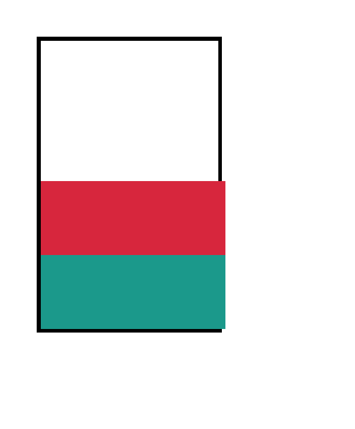
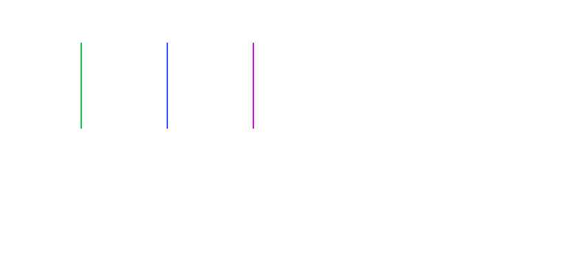
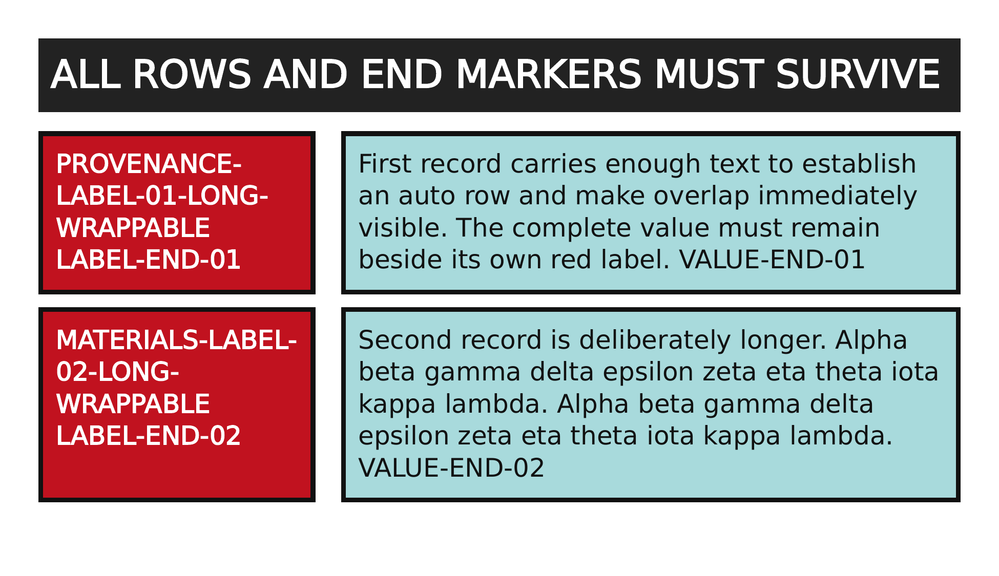
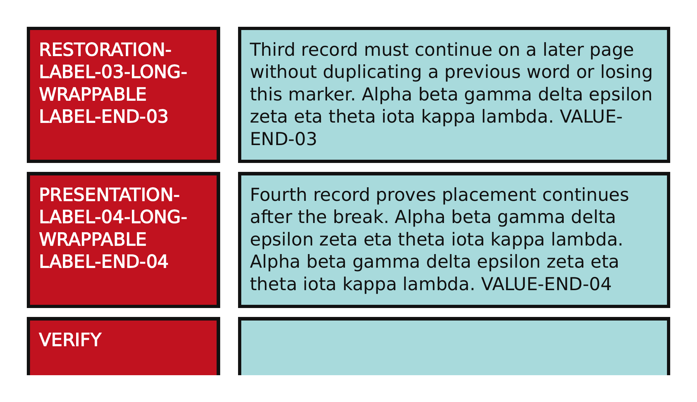
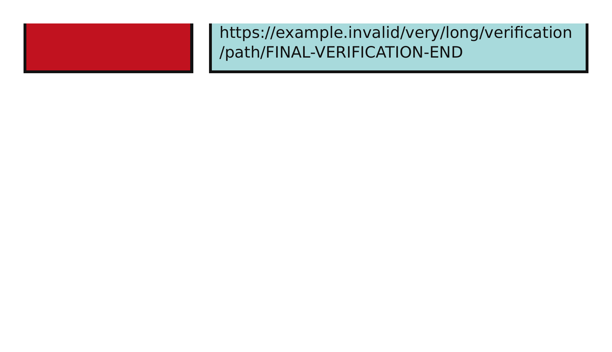
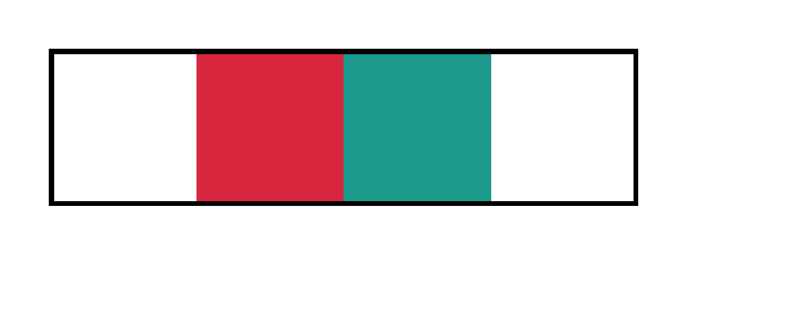

An absolutely positioned child should overlay the grid container and not take the first grid cell from in-flow items; catches element-only grid placement can accidentally include abspos children as grid items and still pass non-positioned fixtures.
An abspos child with grid-column:2 / 3 and grid-row:2 / 3 should use that grid area as its containing block; catches laying every absolute child against the grid padding box. The authenticated standards-derived reference compensates Chromium print-to-PDF's loss of the grid's static offset for this case.
PASSexact matchgrid-align-content-positions-grid-rows-in-a-tall-container · end
Chrome ref

ironpressfull-page >1.0%/channel diff
align-content:end should pack fixed-height rows at the block-end of a taller grid container; catches only stretching auto rows for normal alignment misses explicit align-content values.
align-items:baseline should align text baselines of differently sized grid items rather than stretching or top-aligning them; catches mapping baseline to stretch passes start/end/center/stretch alignment fixtures.
With direction:rtl, grid-column:1 / 2 should address the rightmost column line interval; catches physical left-to-right line numbering passes all LTR placement fixtures.
PASSvisually equivalent · no rejecting defect · thresholded evidence 0.24% · raw 0.24% (750 px)grid-inline-grid-participates-in-inline-flow · inline-gridPASS via CSS-scale observation: conserved sub-CSS coverageMissingmissing 0.8%extra 0.8%ΔE 62.7
Chrome refironpress

full-page >1.0%/channel diff
why: visually accepted coverage phase; raw candidate lacks paint present in reference (0.8%)
An inline-grid between two inline labels should remain on the same text line and occupy only its grid width; catches treating inline-grid as block or ignoring it still passes block-level display:grid fixtures.
regions (3 total; showing 3 representatives)
Complete component census grouped by dominant raster class; representative details are bounded.
A display:contents wrapper should not consume a grid cell; its two children should become separate grid items; catches treating the wrapper as a normal grid item passes direct-child grid fixtures but stacks both grandchildren inside one cell.
PASSexact matchgrid-display-grid · grid
Chrome refironpressfull-page >1.0%/channel diff
2x2 grid of fixed-px tracks establishing a grid formatting context; four colored cells fill the tracks.
Four loud colored rows require display:contents grandchildren to contribute text heights to auto rows; any zero-height row, overlap, missing text or selector ancestry error dominates the page. The authenticated standards-derived source directly substitutes the flattened children required by CSS Display 3 because Chromium clips their text while sizing auto rows through display:contents wrappers.
PASSvisually equivalent · no rejecting defect · thresholded evidence 0.02% · raw 0.02% (488 px)grid-display-contents-fragmentation-text-survival · display-contents-auto-rows-marker-survival · 3 pagesPASS via CSS-scale observation: sub-CSS shared-colour coverageAntialiasCoverageΔE 23.3
page 1
Chrome ref

ironpressfull-page >1.0%/channel diff
page 2
Chrome ref

ironpressfull-page >1.0%/channel diff
page 3
Chrome ref

ironpressfull-page >1.0%/channel diff
why: page 2: visually accepted coverage phase; raw antialiasing coverage residue on a shared outline
A reduced certificate grid forces flattened auto rows across pages with unique label/value end markers, exposing overlap, duplicate words, dropped text and incorrect continuation placement.
regions (8 total; showing 8 representatives)
Complete component census grouped by dominant raster class; representative details are bounded.
A grid item spanning multiple rows should keep its area geometry and fragment content consistently across page breaks; catches approximating spanning items as a single starting-row cell passes simple row-span layout but fails paged output.
A grid with fixed-height rows taller than the page should break between rows rather than clipping or overlapping rows on one page; catches single-page grid fixtures cannot detect whether grid row boxes participate in pagination.
A tall block child inside one grid item should fragment across pages without escaping the grid item's containing area geometry; catches paginating between grid rows only passes row-break fixtures while clipping tall cell contents.
grid-row-gap and grid-column-gap should map to row-gap and column-gap with independent values; catches supporting only gap or grid-gap passes the current generic gap fixture.
A 10% column gap in a 200px grid should create a 20px gutter between two 90px columns; catches parsing percentage gaps but never resolving them in grid layout passes length gap fixtures.
A grid container's ::before generated box should participate as the first grid item before DOM children; catches ignoring generated grid items passes DOM-child-only auto-placement fixtures.
The grid shorthand should set explicit columns and grid-auto-flow/auto rows in one declaration; catches supporting only grid-template longhands and shorthand area form misses common grid:auto-flow syntax.
A later grid shorthand should reset a previous grid-auto-flow:column to row flow when omitted; catches a cascade implementation that treats grid as unrelated leaves stale auto-flow values and still passes isolated shorthand tests.
grid-area: 2 / 2 should place an item at row 2 column 2 with auto end sides resolving to a one-cell span; catches only testing the four-value grid-area form misses omitted-value shorthand behavior.
A grid-area name should resolve through explicit matching foo-start/foo-end column and row line names even without grid-template-areas; catches engines that only resolve grid-area names from grid-template-areas pass area-string fixtures.
Implicit columns created by explicit placement should cycle through grid-auto-columns values; catches having no grid-auto-columns model or only a single value passes simple explicit-column fixtures.
In column flow, dense packing should backfill a later one-row item into an earlier hole in the first column; catches testing only row dense or sparse column flow misses column-major dense search.
Items pinned to column 3 but with auto rows should stack down column 3 without occupying earlier columns; catches a row-major-only auto placer can pass default placement while mishandling one-axis definite column placement.
Items pinned to row 2 but with auto columns should fill row 2 columns in order without consuming row 1; catches a simplistic auto-placement implementation can pass fully-auto and fully-definite fixtures while ignoring one-axis definite placement.
Implicit rows should cycle through the grid-auto-rows list: 30px, 70px, 30px, ; catches storing only one grid-auto-rows length passes single-size implicit-row fixtures.
grid-column: -3 / -1 should span the last two columns of a four-column explicit grid; catches positive-only line fixtures cannot catch engines that parse negative lines as auto or zero.
grid-column: 2 col / 3 col should select later occurrences of the repeated line name; catches resolving every named line to its first occurrence passes basic named-line fixtures.
grid-column: start / span 2 target counts only lines named target, so the item crosses three tracks to the second matching line. Catches reducing span N <custom-ident> to either span N tracks or the first named line.
grid-column: span 2 target / target 3 should count named lines as well as a numeric span; catches a parser accepting only span N or span name passes simpler span fixtures but treats the combined syntax as span 1 or auto.
grid-column: left / span right should span from the left named line to the next right named line, covering two tracks; catches approximating every named span as span 1 passes numeric span fixtures.
A grid item with margin-left:auto should absorb free inline space and move to the right edge of its grid area; catches ignoring grid item margins and relying only on justify-self passes explicit justify-self tests.
Direct text between element children in a grid container should occupy its own anonymous grid item and shift later cells; catches a grid implementation that filters out text nodes passes element-only grid fixtures.
An inline span grid child with width and height should be blockified as a grid item and honor its box size/alignment inside the cell; catches an implementation that leaves inline grid items shrink-wrapped to text can pass fixtures using only div children.
A grid item with margins should paint inset from its grid area and leave white space around the item background; catches ignoring grid item margins passes current padding/border/alignment fixtures.
A 10% left/right margin on a 200px grid area should create 20px side insets, independent of page width; catches resolving percentages against the page or ignoring margins can pass fixed-margin tests.
grid-template-areas should create hero-start and hero-end lines usable by grid-column/grid-row; catches implementing named areas without generated lines passes grid-area:<name> fixtures.
PASSexact matchgrid-area-span-rows · span-rows
Chrome refironpressfull-page >1.0%/channel diff
grid-template-areas with a 'nav' area spanning two rows beside stacked main/foot regions.
grid-template-areas alone should define a two-column/two-row explicit grid whose unsized tracks use auto implicit sizing; catches deriving placement from areas but not deriving track widths passes fixtures that also set template columns.
grid-template-areas with dot (.) null cells: area 'a' spans the first two cells of row 1, area 'b' the last two of row 2, leaving diagonal empty cells.
Rows with different numbers of cell tokens make grid-template-areas invalid, so grid-area names should not resolve; catches padding shorter rows to a rectangle passes valid-area and non-rectangular invalid tests but accepts a distinct invalid syntax.
calc(50px + 30px) should resolve to an 80px first column before the 1fr track; catches a parser that drops calc() tracks passes px/fr fixtures but changes the number and width of columns.
Content-box, border-box and nested percentage-width grids prove fit-content percentages resolve against the grid content box before gaps, padding and borders are removed.
Flagrant six-lane matrix exercises fit-content() limits from 0% through 150%, exposing dropped percentages and failure to clamp between min-content and max-content.
A minmax(auto,1fr) column with a long unbreakable word should not shrink below the word's min-content contribution; catches coercing auto minimum to zero passes simple flexible minmax tests.
A minmax(60px, 100px) track next to 1fr in a 300px grid should cap at 100px, not flex wider; catches treating every minmax as a 1fr flexible track passes minmax(min,1fr) tests.
A minmax(min-content,max-content) track should size from intrinsic text constraints, not as a generic auto track; catches mapping intrinsic keywords to auto passes round-1 min-content/max-content tests only when not nested in minmax.
repeat(auto-fit, minmax(80px, 1fr)) collapses the unused repeated track and stretches four occupied columns; catches auto-fill or fixed-repeat behavior.
repeat(2, 40px 80px) should expand to four tracks alternating narrow and wide; catches a repeat parser that only handles one repeated track passes repeat(3,80px) fixtures.
A wide item spanning two auto columns should contribute to both tracks instead of leaving them at zero or only measuring single-span items; catches measuring only items with col_span == 1 passes simple auto-column fixtures.
PASSexact matchgrid-template-columns-auto · auto
Chrome refironpressfull-page >1.0%/channel diff
Three columns sized 100px auto 100px so the auto track absorbs the leftover width.
An auto row containing wrapping text should grow to the full multi-line content height before the next row starts; catches measuring only one line of text passes empty or single-line auto row fixtures.
Two 1fr rows in a 160px-tall grid with a 10px gap should each be 75px high; catches a row resolver that treats fr rows as auto/content still passes fixed-row fixtures.
Percentage row tracks in a definite-height grid should resolve from the grid content-box height; catches a row resolver that only handles fixed lengths passes column percentage tests.
PASSexact matchgrid-template-rows · px
Chrome refironpressfull-page >1.0%/channel diff
Single column with three explicit-px rows of 50px, 110px and 70px height.
PASSexact matchgrid-justify-content-centers-the-grid-tracks · center

Chrome refironpressfull-page >1.0%/channel diff
A grid narrower than its container should be centered along the inline axis by justify-content:center; catches ignoring grid content distribution passes item-level justify-items fixtures.
space-between should put the first track at the left edge and the second at the right edge of a wider grid container; catches implementing only start/center or item alignment passes simpler alignment fixtures.
justify-content:safe center should behave as start when the grid tracks overflow the container; catches stripping safe and always centering passes fit-content safe-center tests but clips both sides on overflow.
Grid auto-placement follows order-modified document order, yielding yellow-green-red instead of source order; catches engines that ignore order on grid items.
Dense auto-placement must process items in order-modified document order before deciding which holes to backfill; catches a simple order test can fail, but an implementation might sort painting only and still pack dense holes in source order.
place-content:end center should set align-content:end and justify-content:center for the grid tracks; catches engines with place-items but no place-content pass item-alignment shorthand fixtures.
A single item with place-self:end center should override container stretch and paint at block-end/inline-center within its cell; catches container-only alignment fixtures do not prove item-level place-self parsing and application.
A nested grid spanning two parent rows should use the parent row sizes for its own children when rows are subgridded; catches round 1 covered subgrid columns only; an implementation could special-case columns and still fail rows.
Line names declared after subgrid should be usable by grandchildren placed inside the subgrid; catches basic subgrid track adoption does not prove line-name augmentation or name-repeat behavior.
PASSexact matchgrid-subgrid-columns · columns
Chrome refironpressfull-page >1.0%/channel diff
grid-template-columns:subgrid makes a nested grid adopt parent column tracks; catches independent one-column nested-grid layout.
Children of a column subgrid should align to parent columns including the parent's column-gap; catches treating a subgrid as an independent grid with no inherited gap can still pass a no-gap subgrid fixture.
In vertical-rl writing mode, the inline axis is vertical, so grid rows and columns map to different physical directions than horizontal-tb; catches a horizontal-only grid algorithm passes all default writing-mode fixtures.